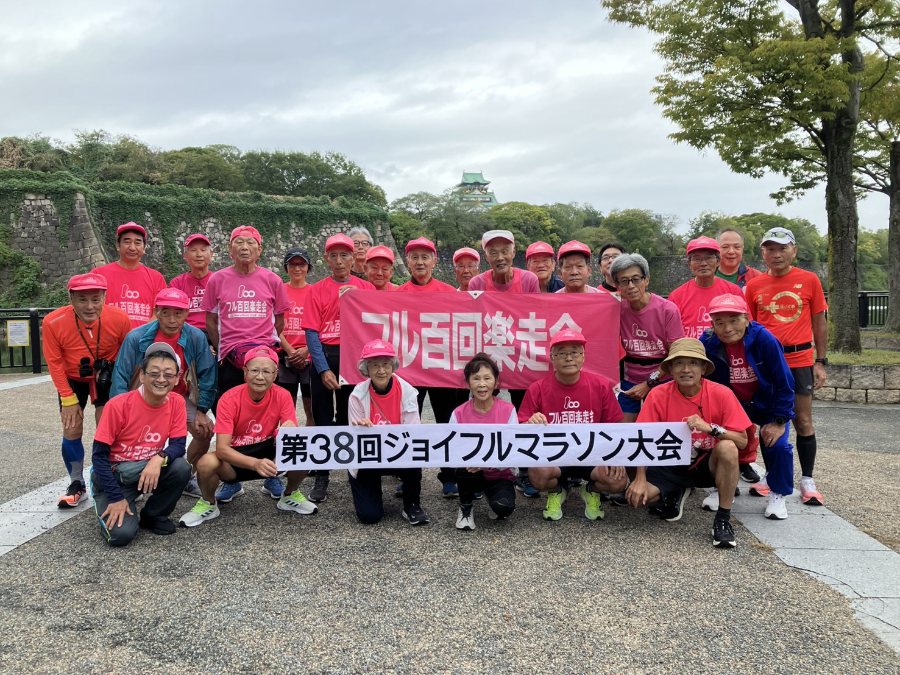

2025-10-26 18:12:26
| 順位 | 会員No | 氏名 | 種目 | タイム |
|---|---|---|---|---|
| 1 | 841 | 福井 康太 | フル | 3時間47分40秒 |
| 2 | 901 | 森 建一 | フル | 3時間50分35秒 |
| 3 | 848 | 盛井 恒男 | フル | 5時間31分25秒 |
| 4 | 856 | 井出 優子 | フル | 5時間43分00秒 |
| 5 | 827 | 山口 義治 | フル | 5時間45分22秒 |
| 6 | 894 | 池尻 彰 | フル | 6時間17分13秒 |
| 7 | 846 | 廣瀬 利光 | フル | 6時間31分32秒 |
| 8 | 839 | 本内 克洋 | フル | 7時間09分01秒 |
| 9 | 830 | 島田 八十美 | フル | 7時間09分11秒 |
| 10 | 861 | 飯田 和好 | フル | 7時間19分17秒 |
| 11 | 780 | 天野 稔 | フル | 7時間20分17秒 |
| 12 | 746 | 田中 国貞 | フル | 7時間25分00秒 |
| 13 | 817 | 石井 功 | フル | 7時間56分52秒 |
| 14 | 749 | 瀬戸 君子 | フル | 7時間56分52秒 |
| 15 | 860 | 河並 昭彦 | フル | 7時間56分52秒 |
| 16 | 854 | 宮野 繁 | フル | 8時間28分00秒 |
| 17 | 3 | 竹田 昭彦 | フル | 9時間43分46秒 |
| 18 | 792 | 大川 昌守 | 18Km | 3時間55分00秒 |
| 19 | 606 | 木元 久生 | 15Km | 3時間42分21秒 |
| 20 | 847 | 浜岸 建 | 12km | 1時間45分00秒 |

集合写真１
集合写真２